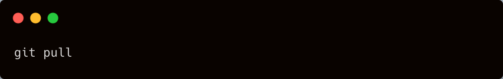
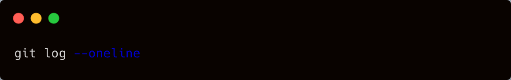
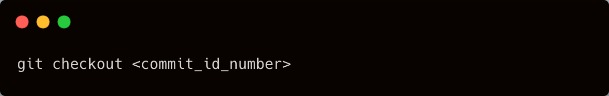
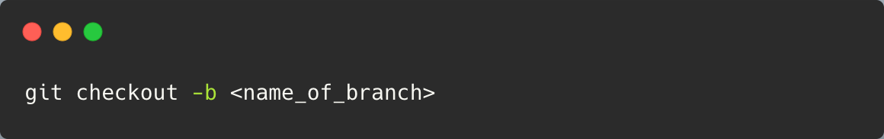
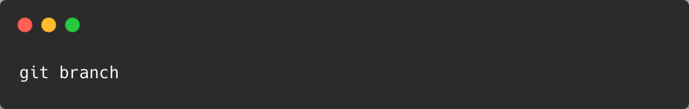

What do you want to do?
Fetch the latest version of your app from Github

View the latest commits made by you and your team
View the latest commits in a shortened version

View a past commit

Create a new branch and switch to it simultaneously

Find out which branch you are currently on
